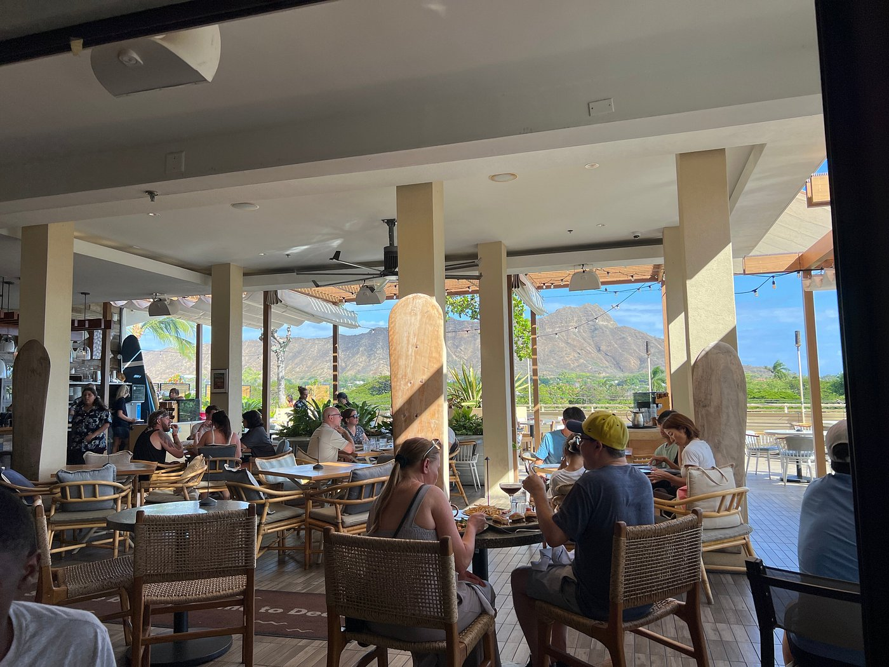
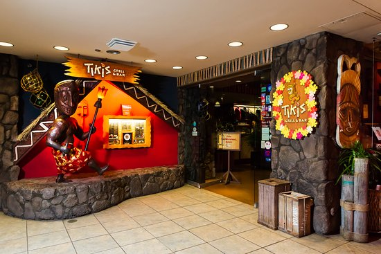

DECK. View. Bar. Grill situated on the 3rd floor pool deck of the Queen Kapiʻolani Hotel, features panoramic views of the iconic Diamond Head and world famous Waikiki beach! This open-air venue provides a stunning backdrop for the chef’s unique American Pacific inspired menu, fresh handcrafted cocktails, locally brewed beers as well as a vast selection of interesting wines. DECK. keeps it fresh, incorporating locally sourced and sustainable ingredients wherever possible through partnerships with local farms, ranches, distilleries, and breweries.
Noi Thai Cuisine invites you to dive into the rich and flavorful world of Thai cooking. Their dishes are inspired by traditional recipes and crafted with love, offering you an unforgettable dining experience. At Noi Thai Cuisine, they bring you a taste of Thailand with our flavorful menu. Meals are prepared with fresh ingredients and authentic flavors. The chefs take pride in every dish, ensuring each bite is a flavorful experience.

Tiki's Grill & Bar is an ocean-view restaurant overlooking Waikiki Beach. They serve fresh, locally sourced island cuisine with a Pacific Rim flair - from fresh fish & seafood to premium steaks, meats & farm-fresh produce. Our big menu offers something for everyone, with pupus, salads & hearty entrées. Guests enjoy both outdoor & indoor seating for lunch, happy hour, or a romantic sunset dinner. Tropical cocktails in tiki mugs, souvenir glassware & real coconut cups add fun. Choose from local beers, a wine list, and tiki classics like the Lava Flow or the legendary 1944 Mai Tai (debated if Don the Beachcomber or Trader Vic created it). Craft cocktail bar, The Lava Lounge, offers an elevated experience. From Waikiki's best happy hour to live music with local bands & hula, check the entertainment calendar. Tiki's delivers unforgettable aloha - perfect for families, couples & groups. Locally owned by 3 UH grads with ohana roots in Waikiki for 5+ generations.
